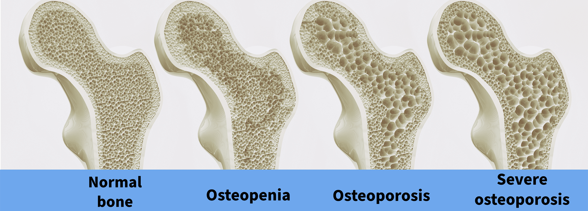
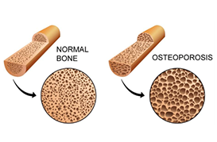
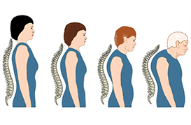
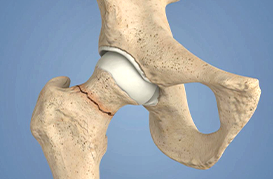
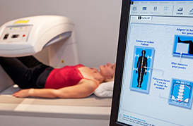

හැඳින්වීම

ඔස්ටියෝපොරෝසිස් පරීක්ෂා කරගත යුත්තේ ඇයි?
එය නිහඬ රෝගයකි ඔබගේ අස්ථි (විශේෂයෙන් කශේරුකා ) දැනටමත් බලපෑම්ට ලක්ව තිබිය හැක සුළු වැටීමකින් පවා උකුල (hip), මැණික් කටුව, උරහිස සහ කශේරුකා බිඳී යා හැක – මෙය ඔබගේ ජීවිතය සම්පූර්ණයෙන් වෙනස් කළ හැක ඉක්මන් හඳුනාගැනීමෙන් වැළැක්වීම හැකි වේ ඔබට නොදැනුවත්ම අවදානමක් තිබිය හැක “ඔබගේ අස්ථි දුර්වලයි” කියා දැනගැනීමට බිඳීමක් වනතුරු බලා නොසිටිය යුතුය

ඔස්ටියෝපොරෝසිස් යනු කුමක්ද?
ඔස්ටියෝපොරෝසිස් යනු ඔබගේ අස්ථි දුර්වල, තුනී සහ පහසුවෙන් බිඳෙන තත්ත්වයකි. මෙනෝපෝස් (menopause) පසු, අස්ථි ආරක්ෂා කරන හෝමෝනයක් වන එස්ට්රොජන් (oestrogen) අඩුවීම නිසා කාන්තාවන්ගේ අස්ථි ශක්තිය ඉක්මනින් අඩුවේ.
මෙය සුළු වැටීමකින් හෝ කිසිදු ආබාධයක් නොමැතිව පවා අස්ථි බිඳීමේ අවදානම වැඩි කරයි.
ආර්ත්ව චක්රය නැවතී ගිය පසු මෙය වැදගත් වන්නේ ඇයි?
ආර්ත්ව චක්රය නැවතී ගිය පසු අස්ථි අහිමි වීම නිහඬව වේගයෙන් සිදුවේ. බොහෝ කාන්තාවන්ට ඔස්ටියෝපොරෝසිස් තිබෙන බව දැනෙන්නේ බිඳීමක් සිදු වූ පසුවයි.
සාමාන්යයෙන් බලපෑමට ලක්වන ස්ථාන: • කශේරුකා (Spine) • උකුල (Hip) • මැණික් කටුව (Wrist) • උරහිස (Shoulder)

ඔබට ඇතිවිය හැකි කශේරුකා ගැටලු
- නිහඬ කශේරුකා බිඳීම් (Vertebral fractures) • කුඩා කැඩීම් හෝ සංකුචනය • වැටීමක් නැතිව පවා සිදුවිය හැක • සාමාන්ය පසුබැසි වේදනාවක් ලෙස වරදවා හඳුනාගත හැක
- උස අඩුවීම • ඇඳුම් වෙනස් ලෙස ගැලපීම ඔබට පෙනේ • සෙන්ටිමීටර් කිහිපයක් සෙමින් අඩුවේ
- වංගු වූ ශරීර ස්ථිතිය (Kyphosis) • “නැමුණු ඉරියව්ව” ලෙස හැඳින්වේ • සමාන්යතාව අඩුවීම හා වැටීම් අවදානම වැඩිවේ
- නිදන්ගත වේදනාව • කුඩා බිඳීම් රැසක් නිසා • නැගී සිටීමේදී හෝ ඇවිදින විට වේදනාව වැඩිවේ

ඔබට අස්ථි බිඳීමේ අවදානම වැඩි ඇයි
උකුල අස්ථි බිඳීම් (Hip fractures) • සාමාන්යයෙන් සුළු වැටීමකින් • ශල්යකර්ම අවශ්ය විය හැක • දිගුකාලීන අසමත්තා ඇතිවිය හැක
මැණික් කටුව බිඳීම් (Wrist fractures) • බොහෝවිට මෙය පළමු අනතුරු ඇඟවීම වේ • වැටීමක් නතර කිරීමට උත්සාහ කරන විට සිදුවේ
උරහිස සහ උකුළ බිඳීම් (Shoulder & pelvic fractures) • වේදනාකාරී සහ සුව වීමට මන්දගාමී වේ • ස්වාධීනතාවය සහ චලනයට බලපායි
මෙම පරීක්ෂාවක් අවශ්යද කාටද ?
• වයස 50ට වැඩි නම් • මෙනෝපෝස් තත්ත්වයට පත්ව ඇත්නම් • පැහැදිලි හේතුවක් නොමැති නිදන්ගත වේදනාවක් තිබේ නම් • උස අඩුවීමක් හෝ ශරීර ස්ථිතියේ වෙනස්කම් පෙනේ නම් • සුළු වැටීමකින් පසු අස්ථි බිඳී ඇත්නම් • පවුලේ ඉතිහාසයක් තිබේ නම්

ඔස්ටියෝපොරෝසිස් හඳුනාගන්නේ කෙසේද?
• වෛද්ය පරීක්ෂාව • අස්ථි ඝනත්ව පරීක්ෂාව (DEXA scan)
සරල, වේදනාවක් නොමැති පරීක්ෂාවක් අස්ථි ශක්තිය මැනේ
• අවදානම් ඇගයීම
FRAX භාවිතා කරමින් ඉදිරි බිඳීම් අවදානම ගණනය කරයි

ඉක්මන් හඳුනාගැනීම වැදගත් වන්නේ ඇයි?
ඉක්මනින් හඳුනාගත්තොත්: • අස්ථි අහිමි වීම අඩු කළ හැක හෝ කොටසක් ප්රතිස්ථාපනය කළ හැක • බිඳීම් අවදානම අඩු කරගත හැක • ස්වාධීනතාවය සහ චලනය රැකගත හැක • ප්රතිකාර ලබාගත හැක
අවධානය නොදුන්නහොත්: • හඳුනාගන්න විට ප්රමාද විය හැක • හදිසි බිඳීම් සිදුවිය හැක • සුවවීම කශේරුකා බිඳීම් වලදී විශේෂයෙන් දුෂ්කර විය හැක • දිගුකාලීන පසුබැසි වේදනාව • උස අඩුවීම හෝ කශේරුකා විකෘතිවීම

දැන් ඔබට කළ හැක්කේ කුමක්ද?
• හැකි ඉක්මනින් අප හමුවන්න • ඔබගේ තත්ත්වය ඇගයීමට ලක්කරමු • අස්ථි ඝනත්ව පරීක්ෂාව කරගන්න • ප්රමාණවත් කැල්සියම් සහ විටමින් D ලබාගන්න • ව්යායාම සහ ශාරීරික ක්රියාකාරකම් පිළිබඳ උපදෙස් ලබාගන්න • ශරීර ස්ථිතිය සහ සමාන්යතාව වැඩිදියුණු කරගන්න • ඉක්මනින් වෛද්ය උපදෙස් ලබාගන්න